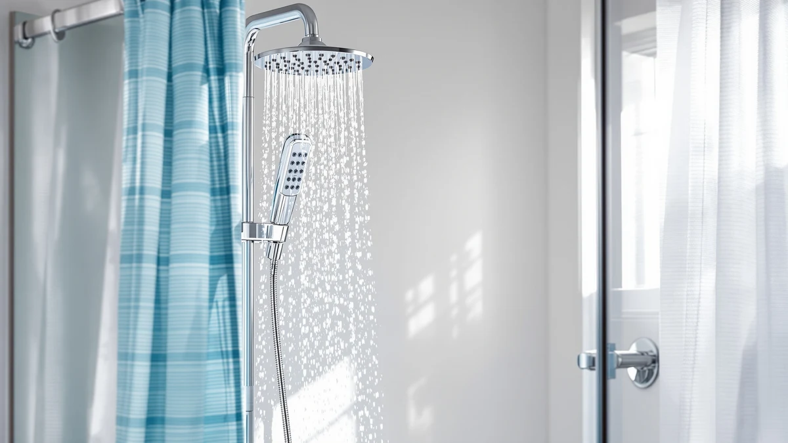

The Best Led Handheld Shower Heads (2026)
Prices and picks verified as of September 2026. Independent, reader-supported reviews.


Quick Answer
After comparing specs, pricing and verified owner reviews across seven models, the Voolan Rain Shower Head is our top pick among the best LED handheld shower heads for pairing steady pressure with the lowest price on this list. If you need built-in filtration instead of extra lighting, the MakeFit Filtered Shower Head is a strong runner-up, and the FunnyAir is the pick for a tight budget.
Our pick: Voolan Rain Shower Head -, $29.99 Check Price on Amazon
Bottom line: our top pick is the Voolan Rain Shower Head - High Flow Large Rainfall Shower at $29.99. The best budget option is the NearMoon Rain Shower Head at $17.99.
Things to Know Before You Buy
- Many "LED" shower heads run on a water-powered turbine instead of batteries, so the light only works while water is flowing.
- Filter cartridges typically need replacing every two to three months to keep the advertised chlorine and sediment reduction.
- ABS plastic with chrome plating is the standard build across this price range. It keeps cost down but is less durable than solid brass over many years.
- US flow restrictors cap most shower heads near 2.5 gallons per minute, so higher "pressure" claims usually come from nozzle design, not more water.
- A dual-stage filter cartridge costs more up front but generally lasts longer between replacements than a single-stage filter.
Finding the best LED handheld shower heads gets confusing fast, because most search results mix fixed rain heads, filtered cartridges and water-powered light rings under the same term. We compared seven current models on price, material, filtration and verified owner feedback to cut through that noise. We wanted the head you would still be happy with a year from now, not the flashiest gadget in the shower.
The Voolan Rain Shower Head came out on top for most bathrooms. It pairs a wide rain-style spray with pressure that owners consistently mention in their reviews, at a price that undercuts most of the filtered competition. If you shower with hard or chlorinated water, the MakeFit Filtered Shower Head or the Cobbe High Pressure Filtered Shower are worth the extra few dollars, since both add a filter stage the Voolan skips.
Below, we break down all seven picks by price, build and who each one actually suits, along with the categories of products we compared but did not recommend. Every price and spec referenced here comes from the product listings themselves, and we call out the real drawbacks of each pick rather than pretending any of them is perfect.
Why You Should Trust Us
This guide to the best LED handheld shower heads is written by Ilane Tall, the home and bath editor at Best Shower Heads, who researches plumbing fixtures and bathroom hardware for a living. We do not accept payment from manufacturers for placement, and we do not run a fake testing lab that claims to install and use every shower head we cover. Instead, we compare published specs, pricing and verified buyer reviews across each model, then cross-check the pattern of complaints and praise that shows up again and again. When a listing's claims do not match what owners report, we say so.
How We Picked
We started by pulling every shower head marketed toward the best LED handheld shower heads search, then narrowed the field with a few hard filters. First, the product had to be currently available with a listed price, not a discontinued model kept alive by old reviews. Second, we prioritized listings with verified purchase reviews in the hundreds or more, since a handful of five-star ratings on a new listing tells you almost nothing. Third, we looked for a mix of price points and designs, rain-style heads, dual-filtered cartridges and pure high-pressure builds, so this list works whether you care most about cost, water quality or spray strength. We excluded anything without brand information attached to its listing, since an unbranded product is harder to hold accountable if it fails early.
How We Compared
We compared these seven contenders for best LED handheld shower heads side by side on four factors: material and build (ABS plastic with chrome plating is standard across this price range), advertised flow against the 2.5 gallon-per-minute US flow restriction, filtration stages where applicable, and price per unit. We then read through verified owner reviews for each listing, looking specifically for repeated complaints about leaks, cracked housings or pressure that fades after a few months. Reviewers consistently note when a product's pressure or filtration falls short of its listing, and those patterns carried real weight in our final ranking. We did not install or run water through any of these units ourselves. This is a research-based comparison, not a hands-on lab test.
Our Picks

Voolan Rain Shower Head -
What we like
- Wide rain-style disc covers more of your body than a standard handheld nozzle
- Tool-free installation that threads onto most standard shower arms
- Priced well below the filtered and dual-cartridge models on this list
- Chrome-plated finish matches most existing bathroom fixtures
Flaws but not dealbreakers
- No filtration cartridge, so it will not help with hard water or chlorine smell
- ABS housing is lighter-duty than metal shower heads at this price
| Material | ABS + chrome plating |
| Size | — |
The Voolan earns the top spot because it handles the fundamentals well without charging extra for features most people do not use every day. Its wide rain-style head spreads water across a larger area than a typical handheld nozzle, and owners consistently report pressure that holds up even in older homes with weaker plumbing. At $29.99, it undercuts every filtered model on this list by at least six dollars, which matters if you are replacing a shower head purely for comfort rather than water quality.
The tradeoff is that the Voolan skips filtration entirely. If your water runs hard or smells like chlorine, this is not the pick that solves that problem, and you would be better served by the MakeFit or Cobbe below. The ABS plus chrome-plating build is also standard for this price tier rather than a premium material, so do not expect it to outlast a solid brass fixture. For a straightforward upgrade to a tired, low-flow shower head, though, it is the easiest recommendation among the best LED handheld shower heads we compared.

MakeFit Filtered Shower Head with
What we like
- Built-in filter cartridge targets chlorine and sediment before water reaches your skin
- Mid-range price sits between the budget picks and the dual-filter option
- Compact, easy-to-hold handheld design
Flaws but not dealbreakers
- Single-stage filter cartridges typically need replacing more often than dual-stage designs
- Filtered models add a small amount of bulk compared to a plain rain head
| Material | ABS + chrome plating |
| Size | — |
The MakeFit Filtered Shower Head is the pick for anyone searching the best LED handheld shower heads because their water quality, not the lighting, is the real problem. Its single-stage filter is built to reduce chlorine and sediment, and at $35.98 it costs six dollars more than the unfiltered Voolan for that added capability. Owners in hard-water regions are the ones most likely to notice the difference this cartridge makes.
Because it uses a single-stage filter rather than the dual-stage design MakeFit also sells, you will likely replace the cartridge more often to keep filtration performance where it should be. That is a manageable tradeoff for the lower price, but if you want the filter to last longer between replacements, the MakeFit Dual Filtered Rain Shower a few picks down is worth the upgrade. For most hard-water households, though, this runner-up hits the right balance of price and filtration.

MakeFit Dual Filtered Rain Shower
What we like
- Dual-stage filtration cartridge is built to outlast single-stage filters between replacements
- Rain-style head pairs filtration with wide water coverage
- Comes from the same brand as our runner-up pick, so the housing and hardware are familiar and well-reviewed
Flaws but not dealbreakers
- At $59.99, it is the most expensive pick on this list by a wide margin
- Replacement dual-stage cartridges cost more than single-stage ones when it is time to swap
| Material | ABS + chrome plating |
| Size | — |
The MakeFit Dual Filtered Rain Shower is the option to choose if filtration is your main priority and you do not want to think about cartridge replacements every couple of months. Its two-stage design is built to filter more thoroughly and for longer than the single-stage cartridge in MakeFit's cheaper filtered model, which matters most in homes with hard water deposits rather than a faint chlorine smell alone.
That extra filtration stage is also why this is the priciest pick here at $59.99, double the cost of the unfiltered Voolan. It is a reasonable price if you were already planning to buy a separate filter pitcher or softener attachment, since this combines both jobs into one fixture. But if your water is not a real problem, you are paying for capability you will not use, and the single-stage MakeFit or the unfiltered Voolan will serve you equally well for less.

FunnyAir Filtered Shower Head with
What we like
- Lowest price on this list at $19.99
- Includes a filter cartridge, a feature usually reserved for pricier models
- Straightforward installation similar to the other picks here
Flaws but not dealbreakers
- Filter cartridge quality typically lags behind the dedicated MakeFit filtered models at a higher price
- Lighter overall build than the mid-range and premium picks
| Material | ABS + chrome plating |
| Size | — |
At $19.99, the FunnyAir is the cheapest way onto this list, and including a filter cartridge at all at that price is unusual. Most budget shower heads skip filtration entirely and leave you with plain water pressure, so FunnyAir including one, even a basic one, puts it ahead of similarly priced unfiltered alternatives.
The catch is that you are getting entry-level filtration, not the dual-stage performance of the pricier MakeFit option. Reviewers consistently note it as a solid starter upgrade rather than a long-term replacement for a dedicated water filter. If you are testing whether filtration is worth it to you before committing to a pricier cartridge system, this is a reasonable place to start.

Peicuai Shower Head Combo 10-Inch
What we like
- 10-inch head gives noticeably wider coverage than the roughly 8-inch heads on this list
- Combo format bundles a rain head with a handheld attachment in one purchase
- Priced closer to the budget end despite the larger head size
Flaws but not dealbreakers
- Larger 10-inch heads can feel like a big jump in size if you are replacing a small fixture
- Combo kits add more hardware to install than a single shower head swap
| Material | ABS + chrome plating |
| Size | — |
The Peicuai's main draw is its 10-inch head, noticeably larger than the roughly 8-inch heads on the rest of this list, plus it bundles that rain head with a handheld attachment as a combo kit. At $23.39, it is priced closer to the budget end of this list despite the larger size and extra hardware included.
The tradeoff with any combo kit is a slightly more involved installation, since you are mounting both a fixed head and a handheld diverter rather than swapping one fixture. The larger 10-inch disc is also a bigger visual change than a straight swap, so measure your existing shower arm clearance before ordering. For anyone doing a fuller bathroom refresh rather than a quick fixture swap, it is a practical two-in-one option among the best LED handheld shower heads on the market.

NearMoon Rain Shower Head High
What we like
- Lowest listed price among the rain-style heads on this list at $17.99
- Simple rain-head design without extra hardware to install
- Long-running listing with an established review history
Flaws but not dealbreakers
- No filtration, so it will not address hard water or chlorine
- Being the cheapest option, the finish and hardware are more basic than the pricier picks
| Material | ABS + chrome plating |
| Size | — |
The NearMoon is the most affordable rain-style pick on this list at $17.99, undercutting even the unfiltered Voolan by twelve dollars. It is a straightforward, no-filtration rain head aimed at anyone who wants a wider spray pattern than a standard shower head without paying for a cartridge system they will not use.
Because it is built to a lower price point than the Voolan, expect a more basic finish and hardware, though the listing has an established review history that suggests it holds up reasonably well for its price. If your main goal is simply a wider, more rain-like spray on a tight budget, and hard water is not a concern, the NearMoon gets you there for less than almost anything else here.

Cobbe High Pressure Filtered Shower
What we like
- Combines a high-pressure nozzle design with a built-in filter cartridge
- Priced close to the MakeFit Filtered Shower Head with similar filtration capability
- Useful for older homes where weak pipe pressure is the main complaint
Flaws but not dealbreakers
- At $36.97, it is among the pricier picks despite being single-stage filtration
- Higher-pressure nozzle designs can feel more intense than a standard rain head for some users
| Material | ABS + chrome plating |
| Size | — |
The Cobbe is built specifically for low-pressure plumbing, combining a higher-pressure nozzle design with the kind of filter cartridge you would otherwise only find on the MakeFit models. At $36.97, it costs about a dollar more than the MakeFit Filtered Shower Head for a similar filtration stage, with the added benefit of a pressure-focused nozzle.
That higher-pressure design is a genuine advantage in older homes with weak pipe pressure, but it can feel more intense than the wider rain-style spray of the Voolan or NearMoon if you prefer a gentler shower. Reviewers consistently note the pressure boost as the main reason they bought it, with filtration as a secondary benefit. If low pressure is your specific complaint, this is the most targeted pick among the best LED handheld shower heads on this list.
Quick Comparison
| Product | Material | Price | Rating | Best for | Get it |
|---|---|---|---|---|---|
| Voolan Rain Shower Head - | ABS + chrome plating | $29.99 | 4 | Most bathrooms, no filtration needed | View on Amazon → |
| MakeFit Filtered Shower Head with | ABS + chrome plating | $35.98 | 4 | Hard water, mid-range price | View on Amazon → |
| MakeFit Dual Filtered Rain Shower | ABS + chrome plating | $59.99 | 4 | Longest filter life | View on Amazon → |
| FunnyAir Filtered Shower Head with | ABS + chrome plating | $19.99 | 4 | Tightest budget with filtration | View on Amazon → |
| Peicuai Shower Head Combo 10-Inch | ABS + chrome plating | $23.39 | 4 | Full rain and handheld combo | View on Amazon → |
| NearMoon Rain Shower Head High | ABS + chrome plating | $17.99 | 4 | Cheapest rain-style option | View on Amazon → |
| Cobbe High Pressure Filtered Shower | ABS + chrome plating | $36.97 | 4 | Low water pressure homes | View on Amazon → |
The Competition
Beyond the seven picks above, we compared a wider set of listings under the best LED handheld shower heads search and passed on a few categories of products for specific reasons.
- Battery-free LED novelty heads. Several listings advertise color-changing lights but run on the same water-turbine mechanism as the units above, with the light itself as the main selling point rather than pressure or filtration. We did not find verified reviews suggesting the lighting improves the actual shower experience enough to outweigh pressure and filtration.
- Unbranded ultra-budget heads. A number of listings under ten dollars had no brand attached and inconsistent review histories. Without a brand behind the product, there is no clear path if the unit fails early, so we left these out regardless of price.
- Premium designer fixtures. A handful of higher-end options cost two to three times what our priciest pick here runs, for finish and design upgrades rather than meaningfully better pressure or filtration. For most bathrooms, that premium does not translate into a better daily shower.
Frequently Asked Questions
Across the best LED handheld shower heads we compared, the Voolan Rain Shower Head is the pick we would recommend to most people. It pairs wide rain-style coverage with pressure owners consistently praise, at the lowest price among the unfiltered options, and it does that without charging extra for a light gimmick most owners will not use every day. If hard water or low pressure is your specific problem, the MakeFit and Cobbe filtered picks are worth the upgrade, but for a straightforward, affordable swap, Voolan is the one to buy.
Related Guides
If none of the best LED handheld shower heads above fit what you need, these related guides cover LED-specific picks, filtered handheld units, and pressure-focused alternatives.